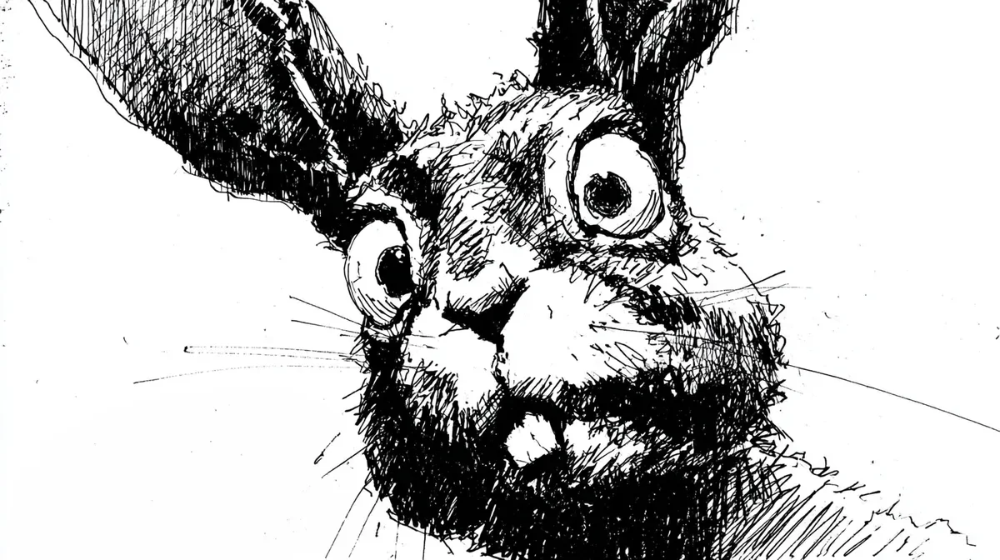

도우려는 손길 위에서 마지막 생명의 경련이 일었고, 내 손전등 불빛 아래서 토끼는 차가운 물건으로 변해갔다.
Upon the hand that meant to help, a final spasm of life shuddered, and beneath my flashlight's beam, the rabbit transformed into a cold thing.
빛의 원반이 닿지 않는 숲은 조용한 것이 아니라, 나라는 존재에 모든 감각을 집중한 채 귀를 기울이고 있었다.
The forest beyond my disc of light was not merely quiet; it was listening, focusing its every sense on my presence.
이것은 자연의 상처가 아니었다; 그 순백의 털 위에는 피가 튄 것이 아니라, 마치 나침반 바늘이 미친 듯이 돌며 새겨놓은 것 같은, 완벽하고 부정한 나선이 그려져 있었다.
This was no natural wound; blood had not been spilled upon the pure white fur but drawn, a perfect, profane spiral, as if etched by a compass needle gone mad.
내 손에 묻은 피가 내 것인 양 차갑게 엉겨 붙었고, 바로 그 순간, 어둠 속에서 마른 가지가 부러지는 소리가 났다. 그것은 대답이었다.
The blood on my hand grew cold and clung as if it were my own, and in that exact moment, a dry branch snapped in the darkness: it was an answer.
공포에 질려 빛줄기를 휘젓자 어둠은 수십 개의 작은 파편으로 부서지며 빛을 반사했다. 그것은 유리 조각이 아니었다. 그것은 죽은 토끼의 눈이었고, 모두 나를 향하고 있었다.
When I swept the beam in terror, the darkness shattered into dozens of glittering fragments. They were not glass. They were the eyes of the dead rabbit, and all of them were turned towards me.